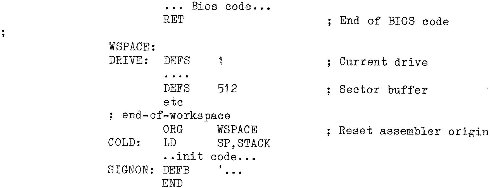

80-Bus News |
January–February 1983 · Volume 2 · Issue 1 |
| Page 28 of 56 |
|---|
With the current BIOSs for the Gemini Galaxy and Multiboard systems the idea has been extended by including all the initialisation code that is only executed once. This covers items such as PIO initialisation, UART initialisation, printing the sign-on message, setting up the parameters of the “Memory” drive, setting up the Winchester disk controller, ....and so on. This results in a saving of 300+ bytes in the BIOS memory requirements.
[ Do this by:
]
3) SIMON and the boot sector. As pointed out by Mr Bowden the SIMON for the Nascom loads the boot sector in its entirity to high memory and then copies the first 128 bytes down to 0. The SIMON for Galaxy/Multiboard reads in the boot sector directly to 0, but does not load any data after the first 128 bytes, (the remaining bytes are discarded without being stored). In each case this was done deliberately, to ensure that the TPA was left unaltered by the actions of SIMON.
This means that when your next door neighbour turns on his arc welder and dims the lights of the neighbourhood (crashing your editor) just after you’ve spent four hours typing in a program, you can press reset with some degree of hope. Once CP/M has been reloaded you can then type “SAVE 250 JUNK” (or some such large number). This will save the entire contents of memory to a disk file “JUNK”. GEMDEBUG can then be used to reload it, and hopefully you can find your source somewhere in what was the memory buffer of the editor. Move it down to 100h, add a few 1Ahs on the end, exit and then do another “SAVE” and you should have your source file.
In other words I arranged it so that if you are ever forced to press “Reset” you can get a disk copy of the TPA (as it was when you pressed reset), and hopefully recover something from it, either a data file, or information of what might have lead to the crash. So there was no ‘malice aforethought’ in ignoring the extra 384 bytes!
(Note GEMDEBUG will load as much of JUNK in as it can. ZSID on the other hand will give an ‘out-of-memory’ message and return to CP/M. In the later case you can try using the “S” and “Q” commands of PIP to split the file up into smaller segments).
| Page 28 of 56 |
|---|